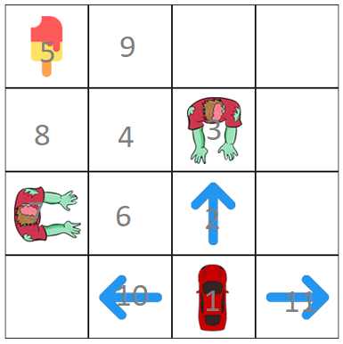

Say your a car and want to get ice cream, and also you want to avoid zombies. Which action would be best to take?

In this case there may too many states to cover, so we will just be adding states randomly or states that are important:
State that gets icecream
State that dies in zombies
Syntax: state action reward next-state
Results: (Note: Press compute policy button multiple times until it gets the optimal policy)
Per Action:
Now we know that our algorithm has limitations, its not a minimax algorithm where you get all the possible outcome, and doesn't quite fit in infinite states, we have to abstract our data to a finite state (we use our imaginations unfortunately..)
Another solution for this problem